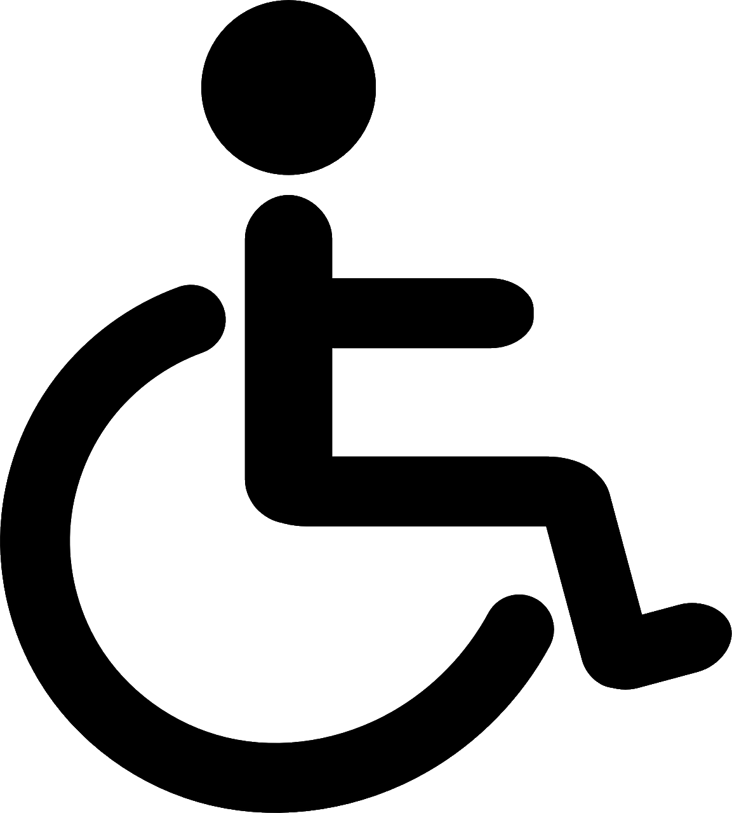

Herzlich Willkommen bei den Stadtwerken Schwedt. Hier finden Sie alle wichtigen und aktuellen Informationen rund um Ihren Nahverkehr in Schwedt und Umgebung.
Abfahrten ab (H) Industriepark Sehna-Nord
Linie
Ziel
Steig
Abfahrt
Versp
Weitere Informationen unter: www.stadtwerkeschwedt.de
 Dieses Fahrzeug ist barrierefrei.
Ein Unternehmen der Stadt Schwedt.
Servicenummer: 03567 16966782
Öffnungszeiten Kundenzentrum Markt Mo-Fr 08-18 Uhr Sa 09-16 Uhr So geschlossen